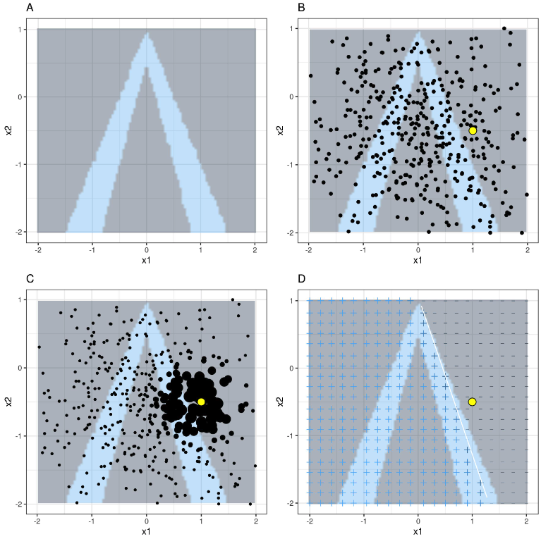
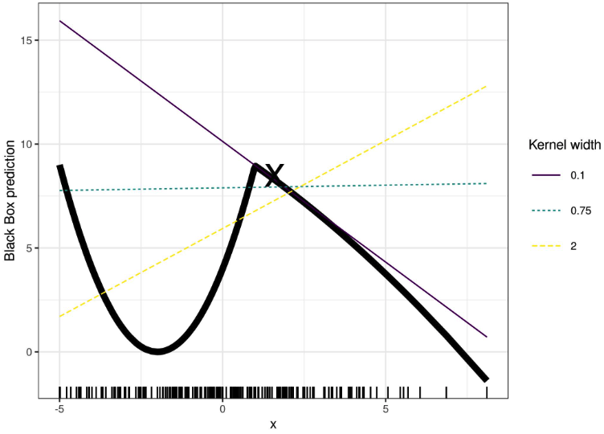
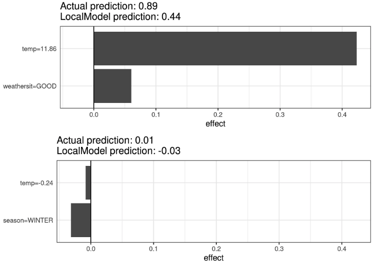
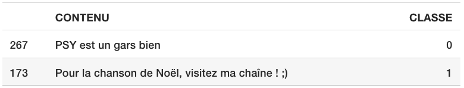
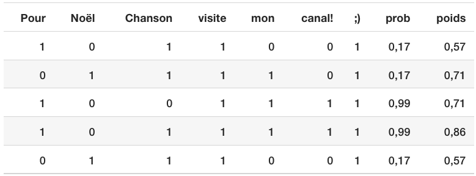
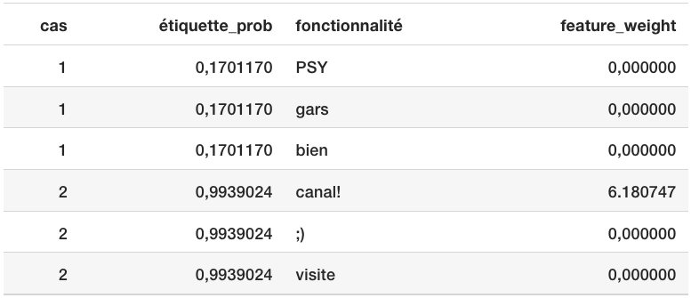
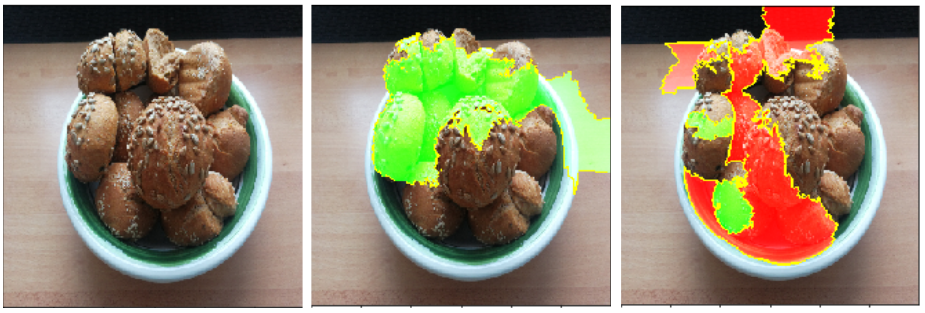

9.2 - Substitut local (LIME)
Les modèles de substitution locaux sont des modèles interprétables utilisés pour expliquer les prédictions individuelles des modèles d’apprentissage automatique en boîte noire. Explications locales interprétables et indépendantes du modèle (LIME) 50 est un article dans lequel les auteurs proposent une implémentation concrète de modèles de substitution locaux. Les modèles de substitution sont formés pour se rapprocher des prédictions du modèle de boîte noire sous-jacent. Au lieu de former un modèle de substitution global, LIME se concentre sur la formation de modèles de substitution locaux pour expliquer les prédictions individuelles.
L’idée est assez intuitive. Tout d’abord, oubliez les données d’entraînement et imaginez que vous n’avez que le modèle de boîte noire dans lequel vous pouvez saisir des points de données et obtenir les prédictions du modèle. Vous pouvez sonder la boîte aussi souvent que vous le souhaitez. Votre objectif est de comprendre pourquoi le modèle d’apprentissage automatique a fait une certaine prédiction. LIME teste ce qui arrive aux prédictions lorsque vous fournissez des variations de vos données dans le modèle d’apprentissage automatique. LIME génère un nouvel ensemble de données composé d’échantillons perturbés et des prédictions correspondantes du modèle de boîte noire. Sur ce nouvel ensemble de données, LIME entraîne ensuite un modèle interprétable, qui est pondéré par la proximité des instances échantillonnées par rapport à l’instance d’intérêt. Le modèle interprétable peut provenir du chapitre sur les modèles interprétables, par exemple Lasso ou un arbre de décision. Le modèle appris doit être une bonne approximation locale des prédictions du modèle d’apprentissage automatique, mais il n’est pas nécessaire qu’il soit une bonne approximation globale. Ce type de précision est également appelé fidélité locale.
Mathématiquement, les modèles de substitution locaux avec contrainte d’interprétabilité peuvent être exprimés comme suit :
\[\text{explanation}(x)=\arg\min_{g\in{}G}L(f,g,\pi_x)+\Omega(g)\]
Le modèle d’explication par exemple \(x\) est le modèle \(g\) (par exemple modèle de régression linéaire) qui minimise la perte \(L\) (par exemple erreur quadratique moyenne), qui mesure à quel point l’explication est proche de la prédiction du modèle d’origine \(f\) (par exemple un modèle xgboost), tandis que la complexité du modèle \(\Omega(g)\) est maintenu faible (par exemple, préférez moins de fonctionnalités). \(G\) est la famille des explications possibles, par exemple tous les modèles de régression linéaire possibles. La mesure de proximité \(\pi_x\) définit la taille du voisinage autour de l’instance \(x\) que nous considérons pour l’explication. En pratique, LIME optimise uniquement la partie perte. L’utilisateur doit déterminer la complexité, par exemple en sélectionnant le nombre maximum de fonctionnalités que le modèle de régression linéaire peut utiliser.
La recette pour former des modèles de substitution locaux :
- Sélectionnez votre instance d’intérêt pour laquelle vous souhaitez obtenir une explication de sa prédiction de boîte noire.
- Perturbez votre ensemble de données et obtenez les prédictions de la boîte noire pour ces nouveaux points.
- Pondérez les nouveaux échantillons en fonction de leur proximité avec l’instance d’intérêt.
- Entraînez un modèle pondéré et interprétable sur l’ensemble de données avec les variations.
- Expliquez la prédiction en interprétant le modèle local.
Dans les implémentations actuelles dans R et Python , par exemple, la régression linéaire peut être choisie comme modèle de substitution interprétable. Au préalable, vous devez sélectionner \(K\), le nombre de fonctionnalités que vous souhaitez avoir dans votre modèle interprétable. Plus \(K\) est faible, plus il est facile d’interpréter le modèle. Un \(K\) plus élevé produit potentiellement des modèles avec une fidélité plus élevée. Il existe plusieurs méthodes pour entraîner des modèles avec exactement \(K\) fonctionnalités. Un bon choix est Lasso. Un modèle Lasso avec un paramètre de régularisation élevé \(\lambda\) donne un modèle sans aucune fonctionnalité. En recyclant les modèles Lasso avec une diminution lente \(\lambda\), l’une après l’autre, les entités obtiennent des estimations de poids différentes de zéro. S’il y a \(K\) fonctionnalités dans le modèle, vous avez atteint le nombre de fonctionnalités souhaité. D’autres stratégies consistent en une sélection avant ou arrière de fonctionnalités. Cela signifie que vous commencez soit avec le modèle complet (= contenant toutes les fonctionnalités), soit avec un modèle avec uniquement l’interception, puis testez quelle fonctionnalité apporterait la plus grande amélioration une fois ajoutée ou supprimée, jusqu’à ce qu’un modèle avec \(K\) fonctionnalités soit atteint.
Comment obtenir les variations des données ? Cela dépend du type de données, qui peuvent être du texte, des images ou des données tabulaires. Pour le texte et les images, la solution consiste à activer ou désactiver des mots simples ou des super-pixels. Dans le cas de données tabulaires, LIME crée de nouveaux échantillons en perturbant chaque entité individuellement, en s’appuyant sur une distribution normale avec moyenne et écart type tirés de l’entité.
9.2.1 - LIME pour les données tabulaires
Les données tabulaires sont des données présentées sous forme de tableaux, chaque ligne représentant une instance et chaque colonne une fonctionnalité. Les échantillons LIME ne sont pas prélevés autour de l’instance d’intérêt, mais à partir du centre de masse des données d’entraînement, ce qui pose problème. Mais cela augmente la probabilité que le résultat de certaines prédictions de points d’échantillonnage diffère du point de données d’intérêt et que LIME puisse apprendre au moins une explication.
Il est préférable d’expliquer visuellement comment fonctionnent l’échantillonnage et la formation de modèles locaux :

Comme toujours, le diable se cache dans les détails. Définir un voisinage significatif autour d’un point est difficile. LIME utilise actuellement un noyau de lissage exponentiel pour définir le voisinage. Un noyau de lissage est une fonction qui prend deux instances de données et renvoie une mesure de proximité. La largeur du noyau détermine la taille du voisinage : une petite largeur du noyau signifie qu’une instance doit être très proche pour influencer le modèle local, une largeur de noyau plus grande signifie que les instances plus éloignées influencent également le modèle. Si vous regardez l’implémentation Python de LIME (fichier lime/lime_tabular.py), vous verrez qu’elle utilise un noyau de lissage exponentiel (sur les données normalisées) et que la largeur du noyau est de 0,75 fois la racine carrée du nombre de colonnes des données d’entraînement. . Cela ressemble à une innocente ligne de code, mais c’est comme un éléphant assis dans votre salon à côté de la bonne porcelaine que vous avez reçue de vos grands-parents. Le gros problème est que nous n’avons pas de bon moyen de trouver le meilleur noyau ou la meilleure largeur. Et d’où vient le 0,75 ? Dans certains scénarios, vous pouvez facilement inverser votre explication en modifiant la largeur du noyau, comme le montre la figure suivante :

L’exemple montre une seule fonctionnalité. La situation empire dans les espaces de fonctionnalités de grande dimension. Il est également très difficile de savoir si la mesure de la distance doit traiter toutes les caractéristiques de la même manière. Une unité de distance pour la fonctionnalité x1 est-elle identique à une unité pour la fonctionnalité x2 ? Les mesures de distance sont assez arbitraires et les distances dans différentes dimensions (c’est-à-dire caractéristiques) peuvent ne pas être comparables du tout.
9.2.1.1 - Exemple
Regardons un exemple concret. Nous revenons aux données de location de vélos et transformons le problème de prédiction en une classification : après avoir pris en compte la tendance selon laquelle la location de vélos est devenue plus populaire au fil du temps, nous voulons savoir un certain jour si le nombre de vélos loués sera au-dessus ou en dessous de la ligne de tendance. Vous pouvez également interpréter « au-dessus » comme étant supérieur au nombre moyen de vélos, mais ajusté en fonction de la tendance.
Nous formons d’abord une forêt aléatoire de 100 arbres à la tâche de classification. Quel jour le nombre de vélos de location sera-t-il supérieur à la moyenne sans tendance, en fonction des informations météorologiques et du calendrier ?
Les explications sont créées avec 2 fonctionnalités. Les résultats des modèles linéaires locaux clairsemés formés pour deux instances avec des classes prédites différentes :

La figure montre clairement qu’il est plus facile d’interpréter les caractéristiques catégorielles que les caractéristiques numériques. Une solution consiste à classer les caractéristiques numériques dans des catégories.
9.2.2 - LIME pour le texte
LIME pour le texte diffère de LIME pour les données tabulaires. Les variations des données sont générées différemment : à partir du texte original, de nouveaux textes sont créés en supprimant aléatoirement des mots du texte original. L’ensemble de données est représenté avec des caractéristiques binaires pour chaque mot. Une caractéristique vaut 1 si le mot correspondant est inclus et 0 s’il a été supprimé.
9.2.2.1 - Exemple
Dans cet exemple, nous classons les commentaires YouTube comme spam ou normaux.
Le modèle de boîte noire est un arbre de décision approfondi formé sur la matrice de mots du document. Chaque commentaire correspond à un document (= une ligne) et chaque colonne correspond au nombre d’occurrences d’un mot donné. Les arbres de décision courts sont faciles à comprendre, mais dans ce cas, l’arbre est très profond. À la place de cet arbre, il aurait également pu y avoir un réseau neuronal récurrent ou une machine à vecteurs de support entraînée aux incorporations de mots (vecteurs abstraits). Regardons les deux commentaires de cet ensemble de données et les classes correspondantes (1 pour spam, 0 pour commentaire normal) :

L’étape suivante consiste à créer des variantes des ensembles de données utilisés dans un modèle local. Par exemple, quelques variantes d’un des commentaires :

Chaque colonne correspond à un mot de la phrase. Chaque ligne est une variation, 1 signifie que le mot fait partie de cette variation et 0 signifie que le mot a été supprimé. La phrase correspondante pour l’une des variantes est «Christmas Song visit my ;) ». La colonne « prob » indique la probabilité prévue de spam pour chacune des variantes de phrase. La colonne « poids » indique la proximité de la variation par rapport à la phrase originale, calculée comme 1 moins la proportion de mots supprimés. Par exemple, si 1 mot sur 7 a été supprimé, la proximité est de 1 - 1/7 = 0,86.
Voici les deux phrases (une spam, une non spam) avec leurs poids locaux estimés trouvés par l’algorithme LIME :

Le mot « canal » indique une forte probabilité de spam. Pour le commentaire non-spam, aucun poids non nul n’a été estimé, car quel que soit le mot supprimé, la classe prédite reste la même.
9.2.3 - LIME pour les images
Cette section a été rédigée par Verena Haunschmid.
LIME pour les images fonctionne différemment de LIME pour les données tabulaires et le texte. Intuitivement, cela n’aurait pas beaucoup de sens de perturber des pixels individuels, puisque plusieurs pixels contribuent à une classe. Changer aléatoirement des pixels individuels ne modifierait probablement pas beaucoup les prédictions. Par conséquent, des variations des images sont créées en segmentant l’image en « superpixels » et en activant ou désactivant les superpixels. Les superpixels sont des pixels interconnectés avec des couleurs similaires et peuvent être désactivés en remplaçant chaque pixel par une couleur définie par l’utilisateur telle que le gris. L’utilisateur peut également spécifier une probabilité de désactivation d’un superpixel dans chaque permutation.
9.2.3.1 - Exemple
Dans cet exemple, nous examinons une classification effectuée par le réseau neuronal Inception V3. L’image utilisée montre du pain que j’ai cuit et qui se trouve dans un bol. Puisque nous pouvons avoir plusieurs étiquettes prédites par image (triées par probabilité), nous pouvons expliquer les principales étiquettes. La première prédiction est « Bagel » avec une probabilité de \(77%\), suivie de « Fraise » avec une probabilité de \(4%\). Les images suivantes montrent pour « Bagel » et « Strawberry » les explications LIME. Les explications peuvent être affichées directement sur les échantillons d’images. Le vert signifie que cette partie de l’image augmente la probabilité de l’étiquette et le rouge signifie une diminution.

La prédiction et l’explication pour « Bagel » sont très raisonnables, même si la prédiction est fausse – ce ne sont clairement pas des bagels puisque le trou au milieu est manquant.
9.2.4 - Avantages
Même si vous remplacez le modèle d’apprentissage automatique sous-jacent, vous pouvez toujours utiliser le même modèle local interprétable pour l’explication. Supposons que les personnes qui examinent les explications comprennent le mieux les arbres de décision. Parce que vous utilisez des modèles de substitution locaux, vous utilisez des arbres de décision comme explications sans avoir à utiliser un arbre de décision pour faire les prédictions. Par exemple, vous pouvez utiliser un SVM. Et s’il s’avère qu’un modèle xgboost fonctionne mieux, vous pouvez remplacer le SVM tout en utilisant un arbre de décision pour expliquer les prédictions.
Les modèles de substitution locaux bénéficient de la littérature et de l’expérience en matière de formation et d’interprétation de modèles interprétables.
Lorsque vous utilisez le Lasso ou des arbres courts, les explications résultantes sont courtes (= sélectives) et éventuellement contrastées. Par conséquent, ils donnent des explications adaptées aux humains. C’est pourquoi je vois LIME davantage dans les applications où le destinataire de l’explication est un profane ou quelqu’un qui dispose de très peu de temps. Cela n’est pas suffisant pour des attributions complètes, donc je ne vois pas LIME dans les scénarios de conformité où vous pourriez être légalement tenu d’expliquer complètement une prédiction. Également pour déboguer les modèles d’apprentissage automatique, il est utile d’avoir toutes les raisons au lieu de quelques-unes.
LIME est l’une des rares méthodes qui fonctionne pour les données tabulaires, le texte et les images.
La mesure de la fidélité (dans quelle mesure le modèle interprétable se rapproche des prédictions de la boîte noire) nous donne une bonne idée de la fiabilité du modèle interprétable pour expliquer les prédictions de la boîte noire dans le voisinage de l’instance de données d’intérêt.
LIME est implémenté en Python (bibliothèque lime et R (package lime et package iml) et est très simple à utiliser.
Les explications créées avec des modèles de substitution locaux peuvent utiliser d’autres fonctionnalités (interprétables) que celles sur lesquelles le modèle d’origine a été formé. Bien entendu, ces fonctionnalités interprétables doivent être dérivées des instances de données. Un classificateur de texte peut s’appuyer sur des intégrations de mots abstraits comme fonctionnalités, mais l’explication peut être basée sur la présence ou l’absence de mots dans une phrase. Un modèle de régression peut s’appuyer sur une transformation non interprétable de certains attributs, mais les explications peuvent être créées avec les attributs d’origine. Par exemple, le modèle de régression pourrait être formé sur les composants d’une analyse en composantes principales (ACP) des réponses à une enquête, mais LIME pourrait être formé sur les questions d’enquête d’origine. L’utilisation de fonctionnalités interprétables pour LIME peut constituer un gros avantage par rapport aux autres méthodes, en particulier lorsque le modèle a été entraîné avec des fonctionnalités non interprétables.
9.2.5 - Inconvénients
La définition correcte du quartier est un très gros problème non résolu lors de l’utilisation de LIME avec des données tabulaires. À mon avis, c’est le plus gros problème de LIME et la raison pour laquelle je recommanderais de l’utiliser uniquement avec beaucoup de précautions. Pour chaque application, vous devez essayer différents paramètres du noyau et voir par vous-même si les explications ont du sens. Malheureusement, c’est le meilleur conseil que je puisse donner pour trouver de bonnes largeurs de noyau.
L’échantillonnage pourrait être amélioré dans la mise en œuvre actuelle de LIME. Les points de données sont échantillonnés à partir d’une distribution gaussienne, ignorant la corrélation entre les caractéristiques. Cela peut conduire à des points de données improbables qui peuvent ensuite être utilisés pour apprendre des modèles d’explication locaux.
La complexité du modèle d’explication doit être définie à l’avance. Ce n’est qu’un petit reproche, car au final c’est toujours l’utilisateur qui doit définir le compromis entre fidélité et parcimonie.
Un autre très gros problème est l’instabilité des explications. Dans un article1, les auteurs ont montré que les explications de deux points très proches variaient grandement dans un cadre simulé. De plus, d’après mon expérience, si vous répétez le processus d’échantillonnage, les explications qui en résultent peuvent être différentes. L’instabilité signifie qu’il est difficile de faire confiance aux explications et vous devez être très critique.
Les explications de LIME peuvent être manipulées par le data scientist pour masquer les biais2. La possibilité de manipulation rend plus difficile la confiance dans les explications générées avec LIME.
Conclusion : Les modèles de substitution locaux, avec LIME comme implémentation concrète, sont très prometteurs. Mais la méthode est encore en phase de développement et de nombreux problèmes doivent être résolus avant de pouvoir être appliquée en toute sécurité.
Notes de bas de page
Alvarez-Melis, David, and Tommi S. Jaakkola. “On the robustness of interpretability methods.” arXiv preprint arXiv:1806.08049 (2018).↩︎
Slack, Dylan, et al. “Fooling lime and shap: Adversarial attacks on post hoc explanation methods.” Proceedings of the AAAI/ACM Conference on AI, Ethics, and Society. 2020.↩︎